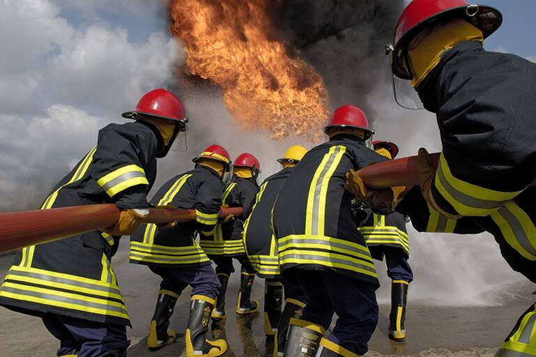

Sistema de diseño
Documentación
Variables, componentes y decisiones técnicas detrás del sitio.
a) Sobre el caso
La Sociedad de Bomberos Voluntarios de Berisso es una asociación civil sin fines de lucro fundada el 25 de abril de 1924. Tiene un cuartel central y dos destacamentos (El Carmen y Villa Zula), con alrededor de cien integrantes que prestan servicio sin remuneración. Se sostiene con el aporte de vecinos, socios y empresas locales.
Público
- Vecinos y vecinas de Berisso que pueden asociarse o colaborar.
- Personas de cualquier género que quieran sumarse como bomberos o bomberas.
- Familias, escuelas y empresas a las que se orientan las charlas y la prevención.
Objetivo
Convocar: que más vecinos se asocien y más personas se sumen al cuerpo activo. Como objetivo secundario, informar y visibilizar qué hace la institución más allá de apagar incendios.
b) Análisis de referencia
Sistema analizado
El sitio del Sistema Nacional de Bomberos Voluntarios (bomberosra.org.ar), publicado por el Consejo Nacional. Lo elegí porque trata el mismo tema: al ser una organización del mismo rubro, sirvió de referencia directa para tomar decisiones. Berisso tiene una sección ahí, pero es mínima, y eso confirmó la necesidad de un sitio propio.
Qué aprendí
Lo que más me sirvió fue la organización. El encabezado tiene la marca a la izquierda y la navegación en mayúsculas. Después viene un hero con foto y un llamado directo a la acción ("Quiero ser Bombero Voluntario" y un botón "Conocer más"). Las noticias se muestran en tarjetas con título, resumen y enlace, y hay bloques de cifras grandes con una etiqueta corta (bomberos, asociaciones, federaciones). La jerarquía es clara: títulos de sección en mayúsculas y botones bien visibles.
También vi lo que no se ajustaba a mi caso. El menú está pensado para la institución (legislación, compras, operaciones) más que para el vecino, no muestra un número de emergencia y el contenido es nacional, con poca información local.
Qué tomé para este sistema
- Hero con foto y llamado a la acción: mi portada con la foto al 26 % sobre rojo y los botones Asociate y Sumate al cuerpo activo.
- Encabezado: oscuro, con la marca a la izquierda y la navegación a la derecha (
.encabezado). - Cifras destacadas: el componente
.dato(1924, 3 cuarteles, 30 h por mes). - Tarjetas: la
.tarjetade servicios, con etiqueta, título, texto y "Ver más". - Títulos en mayúsculas y colores del rubro: rojo y negro son los colores asociados a los bomberos, por eso la paleta es parecida.
Lo que cambié a partir del análisis: el 100 siempre visible en la .franja, un menú pensado para el vecino (Quiénes somos, Qué hacemos, Asociate, Sumate, Contacto) y contenido local de Berisso.
c) Variables del sistema
Todas se declaran en :root. Los nombres llevan las tildes quitadas (--tipo-pequeno, --color-informacion) para evitar problemas de codificación. Los tonos derivados (--color-acento-legible, --color-texto-suave) se calculan con color-mix() a partir de la paleta, sin sumar colores nuevos. La foto del hero se ve roja porque está al 26 % (--opacidad-imagen-hero) sobre el fondo --color-primario.
Paleta
-
--color-primario#c1121f Rojo: botones, enlaces y llamados a asociarse o sumarse -
--color-secundario#111111 Negro: encabezado, pie y bloques oscuros -
--color-acento#ff8f0e Naranja: detalles y destacados -
--color-informacion#1d4e89 Azul: avisos y servicios de agua -
--color-fondo#dbdbdb Fondo general -
--color-superficie#f3f3f3 Tarjetas y bloques claros -
--color-texto#111111 Texto sobre fondos claros -
--color-texto-claro#ffffff Texto sobre fondos oscuros -
--color-borde#d9d9d9 Líneas y bordes -
--color-sobre-oscuro#ffffff Texto sobre rojo, azul o negro
Escala tipográfica · ADLaM Display
-
--tipo-pequeno
0.875rem · 14 px
Textos de tarjetas y etiquetas -
--tipo-base
clamp(1.25rem, 0.9rem + 1vw, 2.25rem) · 20–36 px
Párrafos -
--tipo-medio
1.5rem · 24 px
Títulos secundarios en celular -
--tipo-grande
2rem · 32 px
Título principal en celular -
--tipo-titulo-chico-desktop
3.125rem · 50 px
Títulos de sección en compu -
--tipo-display
7.5rem · 120 px
Techo del título principal (--tipo-hero)
Escala de espaciado
-
--espacio-xs
0.5rem · 8 px -
--espacio-sm
1rem · 16 px -
--espacio-md
1.5rem · 24 px -
--espacio-lg
3rem · 48 px -
--espacio-seccion
clamp(3rem, 8vw, 6rem)
Variables de apoyo: --radio, --borde, --ancho-max, --columnas y --separacion (estas dos últimas cambian con las media queries para pasar la grilla de 4 a 8 y a 12 columnas).
d) Inventario de componentes
Átomos
.botonAcción principal sobre fondo claro..boton--sobre-oscuro · .boton--secundarioVariantes para usar sobre rojo o negro..enlace · .enlace--acento-claroEl naranja se oscurece sobre fondos claros para cumplir contraste AA..etiqueta · --agua · --textoClasifican el tipo de servicio..iconoSVG con fill: currentColor; toma el color del texto.
.imagenFoto del hero, recortada con object-fit: cover.Moléculas
.tarjeta · .tarjeta--destacada · .tarjeta--enlace · @container tarjeta (min-width: 30rem)Toda la tarjeta es clickeable: el enlace del título se estira con ::after. La misma tarjeta en un contenedor angosto (izquierda) y en uno ancho (derecha): el viewport es el mismo, cambia solo el espacio disponible. En celular las dos quedan angostas.1924
Año de fundación
Clarimundo Morgada
Primer jefe
.dato · .dato--oscuroCifra + descripción.Tener entre 18 y 40 años.
Hacer una entrevista previa.
.pasoEl número sale de un contador CSS sobre una lista ordenada.- Teléfono (0221) 461-2425
.contacto-itemÍcono + etiqueta + valor.En una emergencia, llamá al 100
.emergenciaEl 100 siempre visible, dentro de la .franja.- RCP
- Primeros auxilios
- Río
.etiquetasGrupo de .etiqueta que se acomoda con flex-wrap (Qué hacemos).Hoy hay lista de espera.
El personal está las 24 horas.
.aviso · .aviso--relleno · .aviso--neutroNotas importantes en azul.Organismos
.encabezado + .navegacionMarca y navegación. En celular el menú se abre con :target (#menu), sin JavaScript.
.heroFoto al 26 % sobre rojo, titular, bajada y botones.
.franjaBarra negra con dos .emergencia que separa las secciones.
.seccionContenedor de ancho completo con una .grilla adentro.
.serviciosLista de .tarjeta sobre una subgrilla (subgrid).
.pasos · .pasos--rojoAsociate y Sumate: título, lista de .paso y .aviso.
.contactoLista de .contacto-item, .mapa y .aviso--relleno.
.hitosLínea de tiempo de .hito (también con container query).
.pieMarca, aclaración de sitio no oficial y enlaces a todas las páginas.
.columna-principal · .columna-lateralUbican texto (cols 1–7) y datos o etiquetas (cols 9–12) en las páginas de detalle.
Páginas de detalleHistoria, Qué hacemos, Asociate, Sumate y Contacto reutilizan .hero--liso, .seccion, .franja, .pasos y .datos.
e) Decisiones técnicas
La grilla. El body es una grilla de tres filas (encabezado, main y pie). Cada .seccion ocupa todo el ancho para que su fondo llegue de borde a borde, y adentro lleva una única .grilla que usa repeat(var(--columnas), 1fr). Las media queries no redefinen el layout: solo cambian --columnas de 4 a 8 (48rem) y a 12 (80rem). La grilla de servicios usa subgrid, así las tarjetas se alinean con las mismas columnas que el título: la destacada ocupa 8 y las comunes 4. Las páginas de detalle usan la misma grilla con dos clases reutilizables, .columna-principal y .columna-lateral. Flexbox queda para lo chico: la navegación, los botones y el interior de las tarjetas.
Container queries. Las usa .tarjeta. Cuando su contenedor supera 30rem, la tarjeta pasa a dos columnas, el título sube a --tipo-titulo-chico-desktop y aparece el ícono. Una media query no alcanzaba: en tablet el viewport es ancho, pero las tarjetas comunes van de a dos y quedan angostas, mientras que la de Incendios ocupa todo el ancho. Con la container query cada tarjeta responde a su propio espacio. La línea de tiempo de la página de historia (.hito) usa el mismo recurso: en contenedores anchos el año pasa a la izquierda.
Lo más difícil. Sostener la regla de no escribir ningún valor fuera de :root: la franja de seguridad del encabezado, la opacidad de la foto del hero y las sombras también tuvieron que armarse con variables y color-mix(). El otro desafío fue el naranja de acento: sobre negro funciona, pero sobre fondos claros no alcanza el contraste mínimo, así que se creó --color-acento-legible, derivado del mismo naranja.